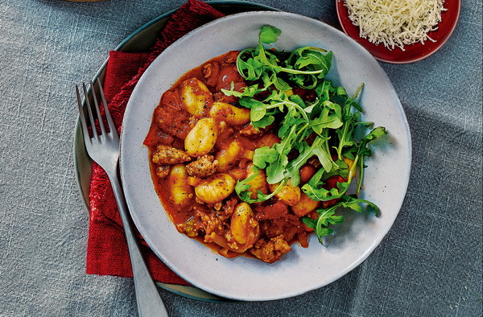

Speedy sausage ragu with gnocchi

A hearty sausage ragu recipe!
This delicious sausage ragu can be on the table in under 30 minutes! Chunks of sausage cooked in a herby, aromatic sauce. Served with tender, fluffy gnocchi. It is sure to garner high praise from all the family.
Ingredients
- 2 tbsp olive oil, plus extra (optional)
- 454g pack 50% less fat Cumberland sausages
- 1 onion, sliced
- 1 celery stick, roughly sliced
- 5g fresh oregano, leaves chopped
- 5g fresh rosemary, leaves chopped
- ½ tsp crushed chillies
- 2 tbsp balsamic vinegar
- 400g tin chopped tomatoes
- 400g tin cherry tomatoes
- 3 tbsp tomato purée
- 150ml red wine
- 500g pack gnocchi
- 10g rocket leaves, to serve
- Parmesan, to serve (optional)
Method
- Heat the oil in a large saucepan over a high heat and squeeze the sausage meat out of its skins and into the pan in bite-sized pieces. Add the onion, celery and carrot, and cook for 3-4 mins until golden in places.
- Add the herbs, crushed chillies, balsamic vinegar, tomatoes, tomato purée and wine; stir well.
- Bring to the boil, then reduce the heat and simmer for 8 mins, stirring occasionally, until reduced and the sauce is thick; season well.
- Meanwhile, cook the gnocchi to pack instructions. Drain well, then stir into the sausage ragu.
- Serve garnished with rocket; scatter with grated Parmesan and drizzle with a little extra olive oil, if you like.